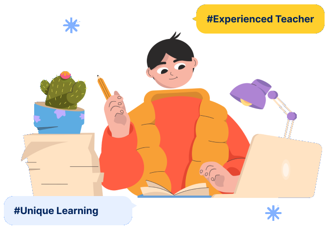

C
coding kid
Testimony
Class
Our Activity
Contact us
Login
Learn Coding For
Kids From Anywhere
Discover the best coding course for your kids.
Learn Coding from basic.
Book a Class
Learn More


Increases Logical Thinking with Coding Class
Having logical thinking skills encourages kids to think for themselves, to
question assumptions, to develop their own theories, and to test their
theories against known facts. These thinking skills are transferable to all
situations.

Preparing Your Kids For
The Future With
Experienced Teacher
Kids who learn to code are ready to face their ever-changing future.
Our Experienced teacher will help your kids develop the resilience,
skills, and abilities to respond productively to those changes.